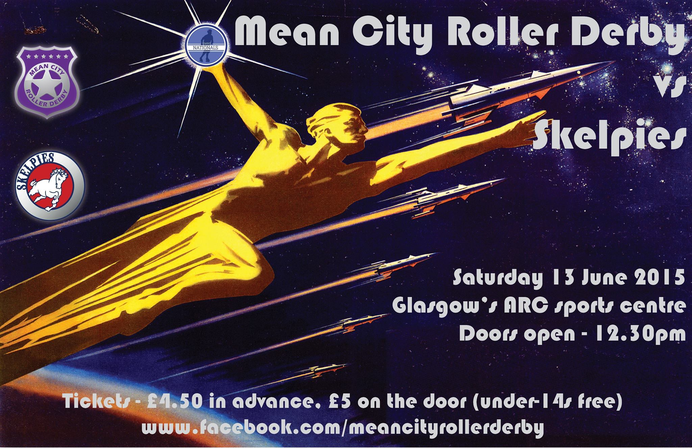
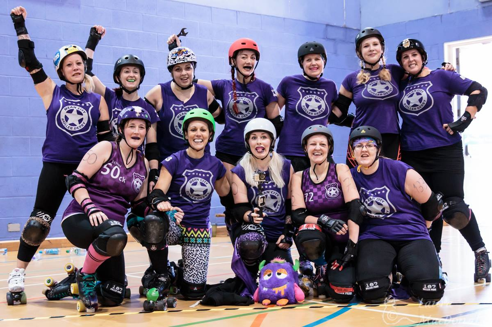
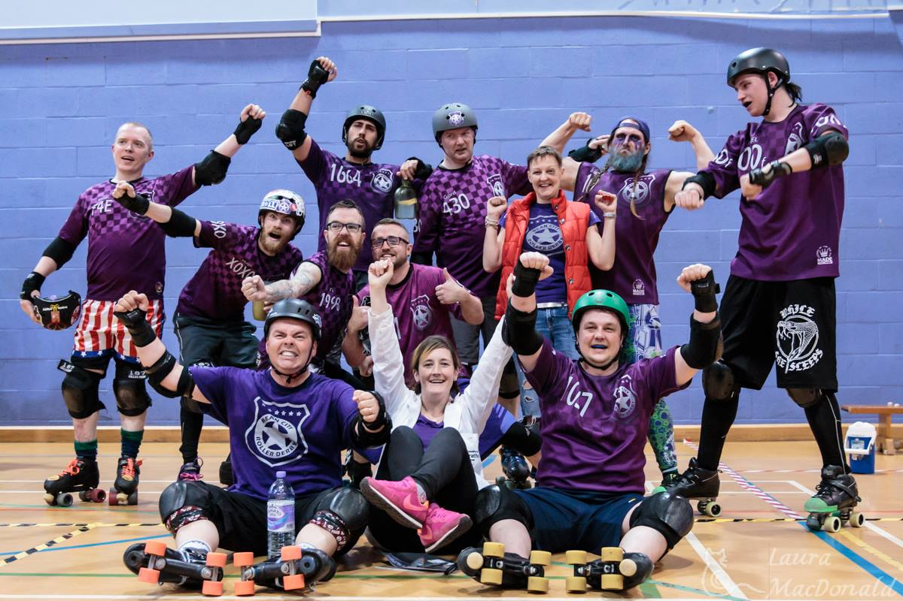

2015 - the force awakens at Mean City Roller Derby
Not that long ago in a derby galaxy not that far away, a group of skaters took a momentous decision…
Towards the tail end of 2014, Glasgow’s Mean City Roller Derby became the first co-ed league in the West of Scotland and only the second in the country.
first co-ed league in the West of Scotland and only the second in the country.
It was a huge (toe)step for the league – which had hitherto only accepted men as full members – and not a decision taken lightly, but it was an essential one and it’s fair to say that 2015 validated that vote.
And then some…
The final whistle has just sounded on 2015 and what a year it has been for Mean City – a year that has seen the league, its members and its supporters roll from strength to strength.
The decision to accept everyone into the league as full participating members – regardless of the junk in their trunk – was met with jubilation and determination.
The year began with simple goals – grow the membership, get more games for the men’s team and form a women’s team.
During the course of the year all of those goals were not only met – they were surpassed in style.
New members flooded into the league – more than doubling the numbers - as word spread about Mean City’s inclusive and friendly ethos, excellent coaching, supportive structure and determination to get better with every session and every game while still having fun.
Throughout the year, Mean City’s male and female skaters flew the flag for the league and Scotland at a variety of events, scrims and games – including charity bouts and special fundraisers – and also provided guests for a number of leagues.
Not only that, three Mean City skaters – Optimus Grime, Konanbourg and Tea – were selected for Power of Scotland – the men’s national team - and will compete at the Men’s Roller Derby World Cup in Canada this summer.
The first game of the year took place on February 7th when Mean City’s men took on Tyne & Fear’s Inglorious B*Stars. The Geordies trumped the Jocks on that occasion, but it was a cracking match and terrific experience.
Next on the calendar for the purple peeps was a double-header on April 25th – featuring Mean City’s men vs Manchester Roller Derby’s Chaos Engine, and Glasgow Roller Derby’s Cannie Gingers vs Team Metal Legs. It was a fiesta of fun, fine derby and friendships.
Despite losing in the final jam, the men held their heads high. Meanwhile, in the background an influx of females saw the Mean City’s women’s team begin to take shape.

On June 13th Mean City welcomed Bairn City’s Skelpies to Glasgow as part of the Scottish Men's Roller Derby Nationals. It was a great occasion and a fantastic advert for the sport, with the Skelpies taking the win.
Just a week later, history was made as Mean City’s women took to the track competitively for the first time at Glasgow Roller Derby’s Sur5al tournament.
MCRD’s fab females took third place overall, with the men’s team winning the male tournament – marking a momentous day for the Mean.
No-one was resting on any laurels though, with a lot of hard work underway on strategy, fitness and continuing to grow the membership.
August 22nd was another historic day for the league as Mean City hosted Mad Macs, with the league’s co-ed team making their competitive debut against Furiosa’s Furies – a Scottish select featuring some of the country’s top talent.
It was a winning debut for the co-ed team, but the real winner was derby as the revolution rolled on.
September saw Mean City’s men travel through to Edinburgh to take on Capital City in the last Scottish Men's Roller Derby Nationals game. Mean City duly claimed victory and second place overall.
Block to the Future was hosted by Mean City on October 17th – a Back to the Future-themed double header which was rather appropriate as it made yet more history for the league.
Mean City Roller Derby's women's team made their competitive debut against Granite City's mighty Fight Hawks, while Mean City's men took on Aire Force One from Leeds.
It was a double celebration as both teams won – with the women especially convincing as they skated home with the victory.

In November there was more success for Mean City as the men shone at the Furness Firecrackers’ Sur5al tournament in Blackpool. Mean City’s men came in fifth out of 16 – a remarkable result given the quality of the 16 teams present.
Indeed, Mean City were the only team not to be beaten by Southern Discomfort and defeated last year’s winners, Lincolnshire Roller Thunder.

That capped a terrific year for the league and President Elaine Hunter is looking forward to an even greater 2016.
“I’m so proud of everyone involved with the league for the amazing efforts they put in during 2015,” she said.
“It was a momentous year for the league, with everyone pulling together to cement our place as one of the best places to train and play roller derby in the UK.
“It’s not been easy at times, but we’ve overcome every challenge by sticking together and working hard. We’re very much a family at Mean City Roller Derby – no-one left out, no-one left behind.
“I’m looking forward to another year of growth in terms of membership, but also growth in terms of how our teams play roller derby – with strategy, fitness, friendship and fun at the heart of our flat-track adventures.”
Team pics by Laura MacDonald